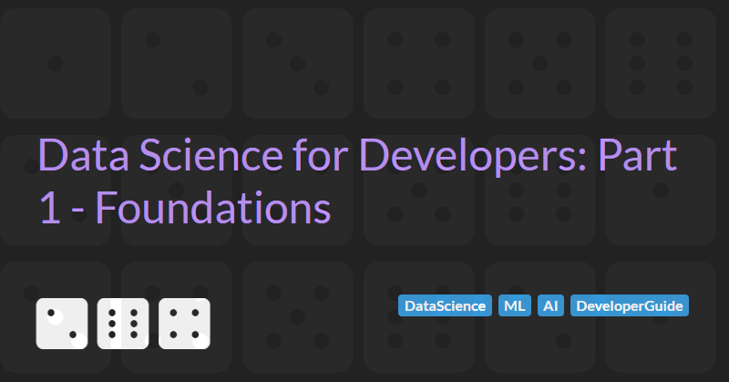

Foundations of Data Science for Developers
Software development is changing. More and more of the project I work on are becoming more data driven. Developing an understanding for data science is becoming essential for all software engineering professionals.
In part 1 of this guide we will cover the fundamental foundational skills I believe any developer needs in order to get started with, understand, and apply data science, machine learning, and AI to their everyday work.
Python
The two main programming languages used by data scientists: Python and R. Both languages have there place in data science and there is plenty of healthy debate over which of this languages is better for specific data science use cases.
R is an programming language specifically created for statistical computing and data visualisation. As the language is specifically designed for data science, R makes it easy to perform complex tasks with a few lines of code.
In contrast, Python is a high-level, general purpose programming language with a philosophy that emphasises code readability. Statistical computing and data visualisation are supported in Python thanks to the large ecosystem of open-source packages. This ecosystem also allow Python to be used in a vast number of different scenarios from Building RESTful APIs to Training Large Language Models.
From my experience R is primarily used for standalone data analysis whereas Python is used for data analysis and everything else you could possible think of. As a developer, I am much more likely to need to integrate with data analysis that has been done in Python and serve Python machine learning models. I firmly believe a solid foundational understanding of Python is essential for today's modern developer.
Unless you are already working in an environment that uses R heavily, I recommend focusing on Python. It will feel more like other programming languages that you already know (making it easier to pick up) and will most likely be more useful. If, at some point in the future, you need to work with R, the data analysis skills you already know from working with Python will be mostly transferable.
Finally, many online data science and AI courses state that no specific programming skills are required. In my experience, this is wrong. Having completed many of these types of course, I found that I got more out of them once I had taken a step back and spent some time learning the fundamentals of the Python language.
Getting Started with Python
The free, self-paced, online Learn to Code with Python Essentials Course is a great place to start for developers new to programming. The course assumes no prior programming knowledge and allows you to prepare for the Python Certified Entry-Level Programmer and Python Certified Associate Programmer exams (should you wish to take them).
The W3C Python Tutorial is also a good alternative starting point.
Learning the fundamentals is a great starting point but mastering a new programming language requires practice. The HackerRank Python Preparation Challenge can help solidify the basics of the language. Once the basics are well understood, continuing to practice with Coding Katas is essential to keeping your newly acquired skills and moving towards mastery.
Statistics and Probability
Mathematical thinking is fundamental to data science. In particular a good understanding of statistics and probability is very important.
If you do not have a background in mathematics or are a bit rusty them spending some time with the basics is highly recommended.
For starters take a look at the HackerRank 10 Days of Statistics Challenge. This should be a gentle introduction to the basics which can be followed up with the free online course from Khan Academy on Statistics and Probability.
Alternatively Statistics for Terrified Biologists is a great introduction to the topic.
Jupyter
Jupyter is a tool for interactive, literate programming via a notebook interface.
The notebook development paradigm provides an interactive environment that allows data scientists and developers to run code in a step-by-step manner. Being able to interactively interact with and visualise data, record notes alongside code, and reliably repeat experiments is extremely valuable when exploring and analysing data, especially as it enables users to execute portions of the code and immediately see the results immediately.
For data scientists Jupyter is an essential tool and typically Jupyter notebooks will be the medium used to share code between data scientists and developers. Because of this, having a familiarity with Jupyter is important.
The easiest way for a developer to get familiar with notebooks is to use the Jupyter Notebooks extensions for Visual Studio Code.
In addition, because of their popularity, many cloud providers and machine learning platforms provide notebook interfaces. Notably Google Colab, Microsoft Azure Notebooks for ML, Amazon SageMaker, Databricks notebooks, and Dataiku Code Notebooks all have notebook offerings.
Of all these offerings, Google Colab is probably the easiest to use as it has the least friction to getting started. It provides a zero cost way to access its notebook interface with minimal setup needed and supports limited but free access to GPUs for accelerating ML workloads.
Pandas (and NumPy)
Pandas is Python's most popular data analysis library allowing data to be manipulated via DataFrames - which are 2-dimentional labelled data structures with columns that can be different types. DataFrames are similar in concept to a spreadsheets or database tables.
Pandas is so popular that even alternatives (such as Polars and Databricks Koalas for Apache Spark) support APIs similar, if not identical, to Pandas.
Pandas depends on another very commonly used Python library: NumPy. NumPy is a fast and versatile n-dimensional array manipulation library supporting vectorisation, indexing and broadcasting concepts.
Learning the fundamentals of Pandas and NumPy is essential for the developer working with data scientists. The W3C Schools Pandas Tutorial and Kaggle Learn Pandas Tutorial are great places to start.
Next Steps
Now that you have a grip of the basic foundations needed to understand machine learning, you should be ready to move on to the second part in the series which covers the fundamentals of machine learning. In the next part we will explore the language of data science enabling you to effectively communicate with data scientists and understand the core concepts behind machine learning models.